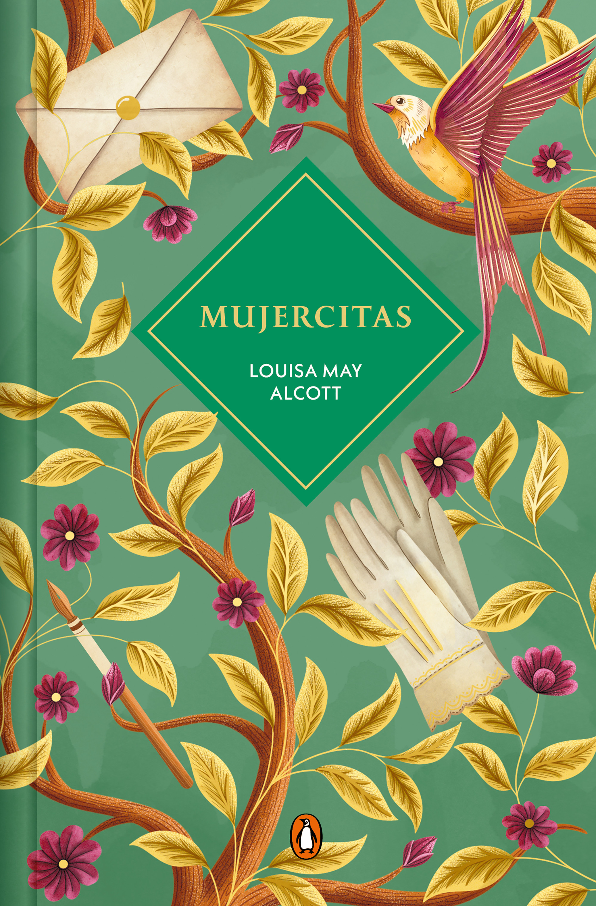

Autor: Louisa May Alcott
Anio: 1868
Genero: Romance
Idioma original: Ingles
Las hermanas March crecen en la Guerra Civil: Meg, Jo, Beth y Amy. Jo quiere escribir y no encajar en el molde. Es una historia de casa, ambicion y cariño, de las que Rory lee como si fueran un diario de adolescencia.